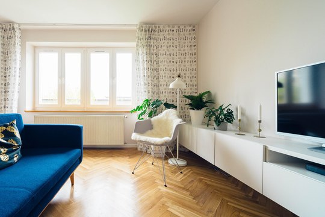

1. home-living-stage / mo
approved · object-only · priority 19
text-free home living interior stage candidate
warm modern living stage · 1920x1281
- assetId
- external.wikimedia-commons.home-living-stage.living-room-unsplash.efef9af45dbf
- sourceTitle
- File:Living room (Unsplash).jpg
- pages
- home, care-solutions
- slots
- hero, banner, marketing-area
- license
- CC0 / cc0 license
- attribution
- false Jarosław Ceborski jarson / https://unsplash.com/photos/jn7uVeCdf6U Image at the Wayback Machine Gallery at the Wayback Machine / Living room (Unsplash)
- source
- https://commons.wikimedia.org/wiki/File:Living_room_(Unsplash).jpg
- local
- data/raw/assets/external-free/wikimedia-commons__home-living-stage__living-room-unsplash__efef9af45dbf.jpg
- safeArea
- {"copyZone":"review-required","primarySubjectZone":"review-required","avoidOverlayZones":["unknown until visual review"],"notes":"External free candidate. Mobile crop and safe area must be reviewed before approval."}
- hints
- home-living-stage / modern living room interior / object-only
decision JSON snippet
{
"assetId": "external.wikimedia-commons.home-living-stage.living-room-unsplash.efef9af45dbf",
"viewportProfile": "mo",
"decision": "pending",
"reviewNotes": "sourceProfile=home-living-stage; role=object-only; semantic=text-free home living interior stage candidate; Replace decision with approved or blocked before applying."
}


.jpg){kind=link}
{kind=link}
{kind=link}
{kind=link}
{kind=link}
_(17970996789).jpg){kind=link}
.jpg){kind=link}
_(14740923406).jpg){kind=link}
_(18157123091).jpg){kind=link}
{kind=link}
{kind=link}
.jpg){kind=link}
.JPG){kind=link}
.JPG){kind=link}
.JPG){kind=link}
{kind=link}
{kind=link}
{kind=link}
{kind=link}
,_Radiola60_in_Cab.(1927-28),_Predicta_TV(1958-60),_RCA_TV(1949),_Edison_Phonograph(1919),_Sewing_Machine(1950-55,1860-65)_-_Fully_Furnished_-_Historic_Furniture_Exhibit_-_Henry_Ford_Museum.jpg){kind=link}
.jpg){kind=link}
{kind=link}
.jpg){kind=link}